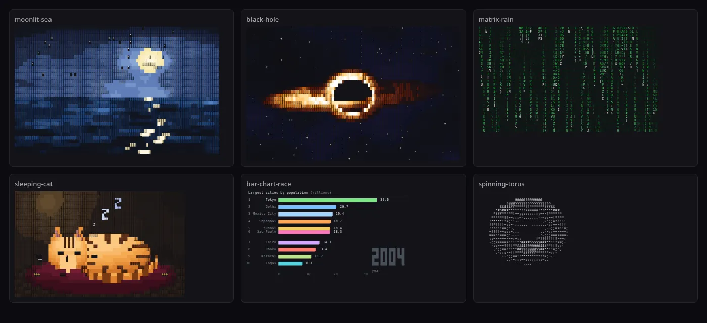
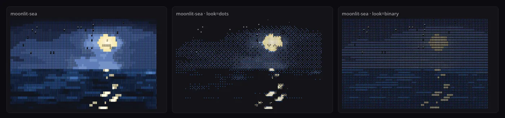

数据来自公开 GitHub API，获取于 2026-10-20 18:45（UTC+8）。仓库建于 2026-10-19 16:00（UTC+8），最后推送 2026-10-19 19:32（UTC+8）；topics：animation、ascii-art、cli、generative-art、web-components 等。仓库约 6.8 MB，其中 pieces/ 634 个文件，核心运行时（lib/ + runtime/ + bin/ + scripts/）合计约 1,660 行。

runtime/player.js 在无头 Chrome 中各渲染一帧，从左上依次是 moonlit-sea、black-hole、matrix-rain、sleeping-cat、bar-chart-race、spinning-torus。实际都是循环动画。它是什么
作者是做“把照片/Logo/视频转成动画 ASCII”商业服务的 ASCII Magic，这个仓库是他们开放出来的素材库与运行时。README 自述为：634 animated ASCII art pieces for web pages, READMEs, wallpapers and terminals.
（634 段动画 ASCII 字符画，用于网页、README、壁纸和终端。）
它面向三种人：
- 想给网站加点“字符感”装饰的人：在终端
npx ascii-magic-art挑一段，回车就把一段“提示词”复制到剪贴板，粘给 Claude Code、Cursor 等编码代理，由它把作品加进你的站点（hero、加载态、空状态、404 页）。 - 想在终端里玩的人：直接播放某一段，或打印一帧静图当 MOTD / shell 启动画面。
- 想自己写的人：每段作品都是同一个极简接口，照着写一个新模块，跑校验脚本即可。
24 个分类的名字本身就说明了覆盖面：Landscapes、UI、Live Data、Explainers、Lettering、Solids、Cosmos、Motion Lab、Weather & Wild、Animals、Things、Algorithms、Demoscene、Arcade、Rules & Frames、Occasions、Cities of the World、Mascots、Empty States、Retro Computing、Science、Music、Food、India。
工作原理
1. 一段作品 = 一个纯函数 draw(t)
每个 pieces/*.js 导出 meta（slug、名称、分类、标签、cols × rows、fps、可选调色板）和默认的 create()；create() 返回 draw(t)：给它“第几秒”，它返回这一帧。帧要么是纯字符串，要么是 { text, color } 两层同形的文本。这意味着任意时刻可随机访问，不依赖上一帧的状态累积，所以同一模块可以被终端播放器、网页播放器、PNG/GIF/视频导出器以完全相同的方式驱动。
2. lib/kit.js：两百行的“字符画工具箱”
所有作品共用一个零依赖工具箱：
- Grid：每格存一个字符 + 一个颜色键（单字符，索引
meta.palette，空格表示默认墨色）+ 一个 z 深度。提供text、block、box（细/粗/双线/圆角）、Bresenhamline、按 0.5 纵横比修正的circle、逐格回调shade，以及带深度测试的setZ。 - 确定性随机：mulberry32 PRNG 与整数哈希的值噪声
noise2、分形噪声fbm。注释写得直白：Same seed, same art on every load.
- 3D：
rotX/Y/Z、project（透视投影，考虑字符格约 2:1 的高宽比）、线框wire。 - 颜色与字形：
hsl、gradient、若干字符明暗梯度（classic、fine、dots、blocks……）、3×5 方块数字字体bigText。
例如 spinning-torus 就是经典的“甜甜圈”算法：两重角度循环扫过圆环表面，算法线与光照点积得亮度，透视后用 setZ 做 z-buffer，再把亮度映射到 .,-~:;=!*#$@ 梯度上。下面是本站用 CLI 打印的一帧：
@@@@@@@@@@@@@
$@@@$$$$$$$$$$$$$$$$$
$$$$$##*****!!*******###$$
*#$###******!!======!*!****###
*###*****!==;;:::::::;===!******
******!!==;::~-,,...,,--~:;==!****
!*****!!=;::~-...........,-:;;=!!!!!
!!*!!!!=;:~-,..... ......,-:;===!!!
!!!!!!==;:~,... ...,~~;;==!!=;
=!!!!==;::~,.. ..-~:;======:
===!!===;:~--- :~;;;=======~
;;=========;=;; !*!!!!!!!!===;
~;;======!!!!**####$$$$$###**!!!==;-
-:;===!!!!**##$$@@@@@@@$$#**!!!;;-
,:;;==!!!**##$$$@@@@$$##**!!=;:,
.-::;==!!****######******=;:-
.-~:;;==!!*********!!=;~-.
.,-~:;;==;;;;;;;:~,.
....,,,,....
3. Looks：按“字形墨量 × 颜色亮度”重绘
runtime/glyphs.js 内置一张表：每个安全字形在 Menlo 中实际覆盖了多少墨（预先在 canvas 中量好、打包成字符串）。重绘时，每格的“暗度” = 字形墨量 × 颜色亮度（Rec.709 加权），再按整帧的最小/最大值拉伸并做 gamma；目标字符集按墨量从浅到深排序，取最接近的那个。默认只重绘方块阴影字符（░▒▓█ 与 ▁…█），文字与线框保持原样；若整帧几乎全是梯度标点（如圆环、等离子），这些标点也被视为阴影。传 all 则全部重绘。于是同一段作品可以一键变成十种风格：dots、ascii、dense、numbers、binary、letters、blocks、squares、lines、dither。

4. 渲染：Canvas 字形图集 + 真正的半调点
网页端 runtime/player.js 并不逐帧改写 <pre>（那是“旧方法”，作为 dom 选项保留），而是在 <pre> 上叠一块 canvas：文字类 look 通过字形图集（GlyphAtlas）绘制，dots/squares 画按暗度缩放的真圆/方块，dither 用 8×8 Bayer 矩阵开关像素。<pre> 里保留预渲染文本，给屏幕阅读器、搜索引擎和不开 JS 的访客。播放器还会：只在元素可见时播放（IntersectionObserver）、尊重 prefers-reduced-motion 停在静帧、给每个播放器随机相位以免一页多个卡片同一帧集中重绘造成卡顿、每 500 ms 才读一次 getComputedStyle。
网页组件 runtime/ascii.js 只有 65 行：定义 <ascii-art> 自定义元素，用 Shadow DOM 放一个 <pre>，按 piece 属性动态 import() 对应模块，再把 size、speed、look、chars、contrast、dot-size 等属性翻译成播放参数。
终端端 bin/cli.js 处理颜色降级：支持真彩色的终端输出 24 位色，其他（尤其 macOS Terminal.app，会把 24 位色码误读成独立指令）用 “redmean” 加权距离就近映射到 256 色；管道输出或设了 NO_COLOR 时关闭颜色。
5. 照片场景与质量闸门
lib/image.js 把“调色板键 + 0–7 级墨量”的图片网格画成 ▁▂▃▄▅▆▇█（墨量按八分之一递增，任何 look 都能从中读回亮度），再叠加可选的确定性动效：斜向扫光、星点闪烁、水面涟漪、云层漂移、棕榈摇摆、飞鸟、流星。
每段作品上线前要过 scripts/validate.mjs：meta 完整、slug 与文件名一致、每一帧尺寸严格等于 cols × rows、颜色层同形且键都在调色板中、只用在所有常见等宽字体里都是单格宽的字符（ASCII、制表/方块、盲文及少量符号）、6 秒内至少 3 帧不同（真的在动）、首帧不能几乎空白、文案不许出现破折号，以及平均每帧在 Node 中不超过 12 ms。scripts/stress.mjs 再在 0–60 秒多个时刻检查文字溢出边框、尺寸跳变、抛异常。本站在本机（Node 20）跑全量校验，结果 633/634 通过，唯一失败项是某段作品平均 12.3 ms/帧、略超预算，属于机器性能差异，功能正常。
快速上手
# 终端里浏览全部作品（方向键切换，s 换风格，回车复制提示词）
npx ascii-magic-art
# 播放某一段 / 列表 / 3 秒后自动停 / 打印一帧静图
npx ascii-magic-art moonlit-sea
npx ascii-magic-art --list
npx ascii-magic-art matrix-rain --seconds=3
npx ascii-magic-art sleeping-cat --frame --look=dots<!-- 网页：引一次脚本，放一个标签 -->
<script type="module" src="https://www.ascii-magic.com/ascii/ascii.js"></script>
<ascii-art piece="moonlit-sea" look="dots" size="10"></ascii-art>// 代码里：npm install ascii-magic-art
import create, { meta } from "ascii-magic-art/pieces/spinning-torus.js";
const draw = create();
const f = draw(1.5);
console.log(f.text ?? f);注意：网页组件默认从作者站点 ascii-magic.com 加载脚本与作品模块；若不想依赖第三方 CDN，可用 npm 包把 runtime/ 和需要的 pieces/ 自托管（MIT 允许）。
与本站相关页面的对比
- ascii-sharks：同样是“字符动画”，但它是一个模拟（鱼群 boids + 鲨鱼追猎）先在连续空间里算，再超采样栅格化成字符；ascii-magic-art 则是634 个直接在字符网格上作画的小模块，重点在可复用、可嵌入、可换风格。
- shanshui：与本项目共享“确定性
render(t)/draw(t)”这一核心思想，任意时刻可随机访问，因此能逐帧离线导出视频；不同在于 shanshui 用 WebGL2 着色器画水墨，这里只用字符和调色板。
启发
- 接口极简才能规模化：
create() → draw(t) → string | {text,color}让 634 段作品共享同一套播放器、导出器、校验器；新作品只需关心“这一秒画什么”。 - 风格与内容解耦：先用“墨量 × 亮度”把任意帧降成一张暗度图，再用任意字符集重新量化，等于给整个素材库加了一个全局“滤镜”层。
- 把质量规则写成脚本：帧尺寸、字符安全集、帧耗时预算、“必须在动”、甚至“不许破折号”都自动检查，适合 AI 批量生成内容后的把关。
- 为编码代理设计分发：终端里挑选 → 复制一段写好的提示词 → 交给代理落地，是“一句话装到你的项目里”的新式安装体验。
附录：README 全文中文翻译
依 MIT 许可翻译转载。原文：README.md（提交 de88962，2026-10-19）。代码块保持原样。
634 段动画 ASCII 字符画，用于网页、README、壁纸和终端。
场景、界面、图表、示意图、3D 形体、加载动画、游戏、分隔线等等，共 24 个分类。
浏览素材库 · 文档 · 制作 README 横幅 · 使用场景一句提示词，把一段加进你的项目
npx ascii-magic-art在终端里实时浏览全部 634 段作品。方向键在作品和分类之间移动，
s切换外观（半调圆点、ASCII、二进制、抖动等），a让文字和线条也一起重绘。按回车，这段作品在当前外观下的提示词就会复制到剪贴板：把它粘贴到 Claude Code、Cursor、Copilot 或任何编码代理中，它就会把这段作品加到你的网站上。或者跳过浏览：npx ascii-magic-art prompt matrix-rain在终端里播放一段
npx ascii-magic-art moonlit-sea npx ascii-magic-art --list npx ascii-magic-art matrix-rain --seconds=3 # stop on its own, for shell startup npx ascii-magic-art sleeping-cat --frame # print one still frame, for a MOTD按任意键停止。加上
--look=dots（或ascii、numbers、binary……）或--chars=" .oO@"可以用其他字符重绘。输出被管道传递或设置了NO_COLOR时会关闭颜色。（注：代码注释意为“自行停止，用于 shell 启动”和“打印一帧静图，用于 MOTD”。）放到网页上
<script type="module" src="https://www.ascii-magic.com/ascii/ascii.js"></script> <ascii-art piece="moonlit-sea"></ascii-art>属性：
属性 作用 piece作品名，与其页面 URL 中的一致 size字号（px，默认 12） speed播放速度，1 为正常 still只显示一帧，不播放动画 bg作品背后的背景色 look换一套字符重绘： dots、ascii、dense、numbers、binary、letters、blocks、squares、lines、ditherchars用你自己的字符代替 look，例如 chars=" .oO@"（会自动按由浅到深排序）mono单色，不用作品的调色板 all与 look或chars合用时，文字和线条也一起重绘，而不只是明暗阴影contrast0 到 100，默认 0 dot-sizedots外观的半调点大小，25 到 120，默认 51density半调点间距，40 到 250，默认 131（点更多，大小不变） steps半调点的尺寸档位： 3、5，或0表示平滑元素只在出现在屏幕上时播放，对偏好减少动态效果的访客则保持一帧静图。
在你自己的代码里使用
npm install ascii-magic-art每段作品都是一个小小的 ES 模块，除
lib/kit.js外没有任何依赖。它导出meta和一个create()函数，后者返回draw(t)：一个从秒数到一帧画面的函数：import create, { meta } from "ascii-magic-art/pieces/spinning-torus.js"; const draw = create(); const frame = draw(1.5); // a string, or { text, color } console.log(frame.text ?? frame);带颜色的帧有一个与
text形状相同的color层。其中每个字符都是meta.palette的键（空格表示默认墨色）。runtime/player.js把它变成 HTML；runtime/canvas.js把它画到 canvas 上，用于导出 PNG、GIF 和视频。外观（Looks）
每段作品都能用另一套字符重绘。每个格子的暗度取决于其字形覆盖了多少墨以及颜色有多亮；外观的字符按墨量排序，取最接近的那个绘制。明暗阴影块会被重绘，文字和线条保持原样（传
all: true则全部重绘）。import { restyle, withLook } from "ascii-magic-art/runtime/glyphs.js"; const frame = restyle(draw(1.5), meta.palette, { look: "dots" }); const drawInNumbers = withLook(create(), meta.palette, { look: "numbers" });制作一段作品
import { Grid } from "../lib/kit.js"; export const meta = { slug: "my-piece", name: "My Piece", category: "generative", note: "One line about it.", tags: ["loop", "minimal"], cols: 60, rows: 20, fps: 24, }; export default function create() { const g = new Grid(meta.cols, meta.rows); return (t) => { g.clear(); g.text(2, 2, "hello " + Math.floor(t)); return g.frame(); }; }然后检查它：
node scripts/validate.mjs my-piece校验器会检查每一帧的尺寸、字符集、它是否在动，以及每帧绘制是否在 12 ms 以内。
许可
MIT。作品可用于任何地方，包括商业作品。欢迎附上回链，但不强制。两幅基于照片的场景
ocean-sunset和starry-ridge沿用其来源照片的 Unsplash 许可；见 NOTICE。想把你自己的照片、Logo 或视频做成动画 ASCII？这正是 ASCII Magic 做的事。
MIT 许可原文
MIT License
Copyright (c) 2026 ASCII Magic (ascii-magic.com)
Permission is hereby granted, free of charge, to any person obtaining a copy
of this software and associated documentation files (the "Software"), to deal
in the Software without restriction, including without limitation the rights
to use, copy, modify, merge, publish, distribute, sublicense, and/or sell
copies of the Software, and to permit persons to whom the Software is
furnished to do so, subject to the following conditions:
The above copyright notice and this permission notice shall be included in all
copies or substantial portions of the Software.
THE SOFTWARE IS PROVIDED "AS IS", WITHOUT WARRANTY OF ANY KIND, EXPRESS OR
IMPLIED, INCLUDING BUT NOT LIMITED TO THE WARRANTIES OF MERCHANTABILITY,
FITNESS FOR A PARTICULAR PURPOSE AND NONINFRINGEMENT. IN NO EVENT SHALL THE
AUTHORS OR COPYRIGHT HOLDERS BE LIABLE FOR ANY CLAIM, DAMAGES OR OTHER
LIABILITY, WHETHER IN AN ACTION OF CONTRACT, TORT OR OTHERWISE, ARISING FROM,
OUT OF OR IN CONNECTION WITH THE SOFTWARE OR THE USE OR OTHER DEALINGS IN THE
SOFTWARE.